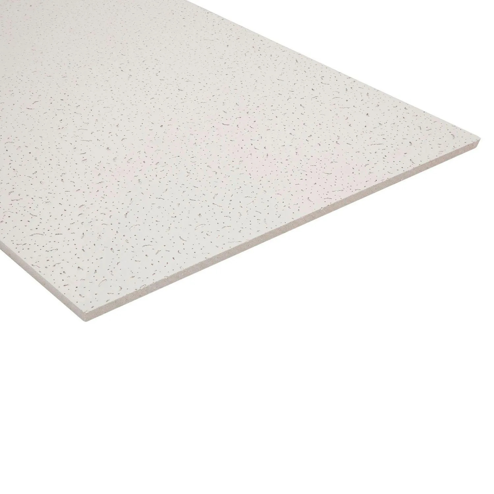

Caja de cielo raso Fissure Topex, 8 unidades

Paquete de ocho paneles de cielo raso con acabado decorativo. Se utiliza para cubrir techos interiores y mejorar su apariencia. Las unidades se comercializan agrupadas, lo que hace práctico su almacenamiento en cajas y sobre pallets.